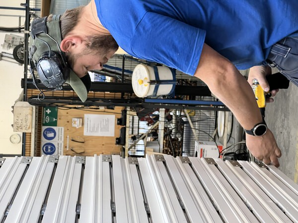
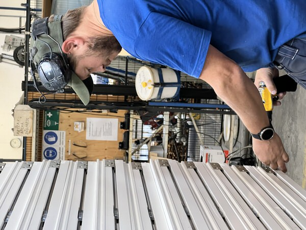
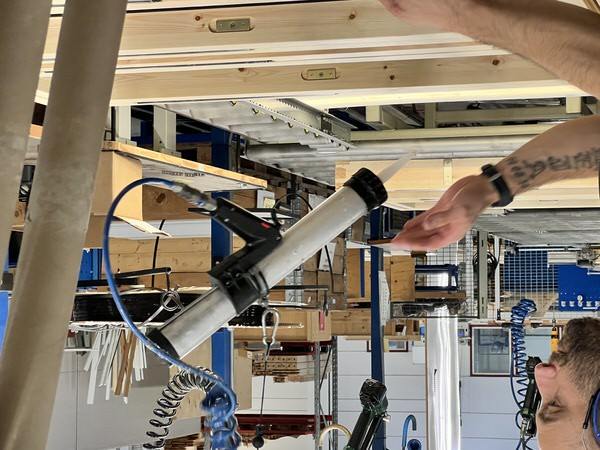

Att arbeta på Tomoku Hus
De flesta av våra anställda jobbar antingen i eller i nära anslutning till själva produktionen. Arbetarna i fabriken är kollektivanställda och jobbar mellan 06:45 – 16:00, förutom varannan fredag då arbetsdagen slutar 13:00.
Vi försöker tillämpa rotation och mångkunnighet så att många klarar flera olika arbetsuppgifter. Vi har inga särskilda förkunskapskrav för att börja arbeta i vår produktion, däremot är erfarenhet av liknande arbeten eller yrkesutbildning såsom Hantverksprogram eller Byggprogram meriterande.
Förutom yrken kopplade till vår produktion har vi även tjänster inom ekonomi, logistik/planering, inköp och försäljning.
Som för så många andra företag så varierar vårt behov av att ta in flera i vår verksamhet över tiden. Vi är dock alltid intresserade av att komma i kontakt med intresserade och motiverade personer, så känner du att Tomoku Hus verkar vara något för dig så hör av dig. Vem vet, blir det inte aktuellt med anställning just nu så är det ändå värdefullt för oss känna till spännande kandidater inför framtiden!
Är du intresserad av att veta mer om företaget eller om det finns behov av arbetskraft så hör du lättast av dig genom att skicka ett mail eller slå en signal så ska vi se till att slussa dig till rätt person: info@tomokuhus.se Tel: 0247-440 00
 

